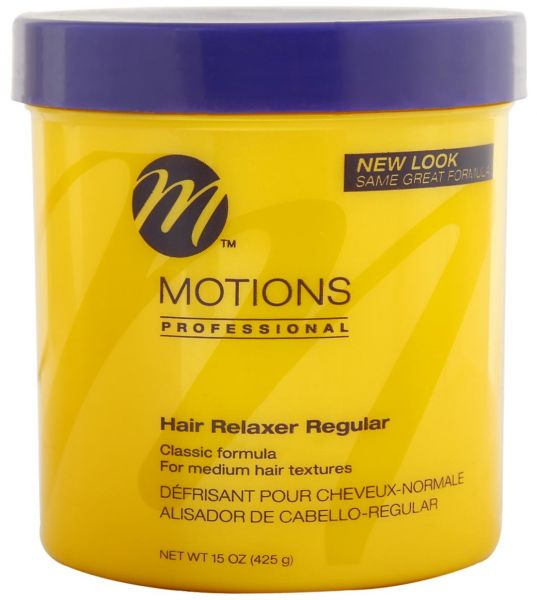
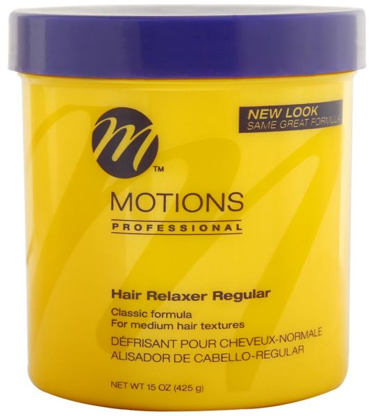

A hair relaxer is a lotion or cream that makes the hair easier to straighten and manage. It reduces the curl by breaking down the hair strand and chemically altering the texture. Most women who decide to get their hair relaxed have curly hair who want it to be stick straight without any frizz. Well there are also effects of relaxers, if used incorrectly or too frequently can include scalp irritation, chemical burns, hair damage, breakage and hair loss. The relaxer should be used every up to 6 weeks because hair grows on average 1/2 inch a month, its safe to assume that hair should have atleast an inch of growth before getting a touch-up. Here we sell different types of hair relaxers from different brands as per peoples choices and preferences. We have relaxers for adults and for kids as well.
| Product | Price of Product | Stock Availability | Sizes | Brands |
|---|---|---|---|---|
| 1 | R40 for adults, R30 for kids | 120 Items are availabe | 250ml, 450ml | Dark n lovely |
| 2 | R50 for adults, R40 for kids | 50 Items are availabe | 250ml | Restore |
| 3 | R39 for adults, R35 for kids | 70 Items are availabe | 250ml, 450ml | Olive Oil |
| 4 | R45 for adults, R30 for kids | 25 Items are availabe | 250ml, 450ml,125ml | Organics |
 
Home

Home